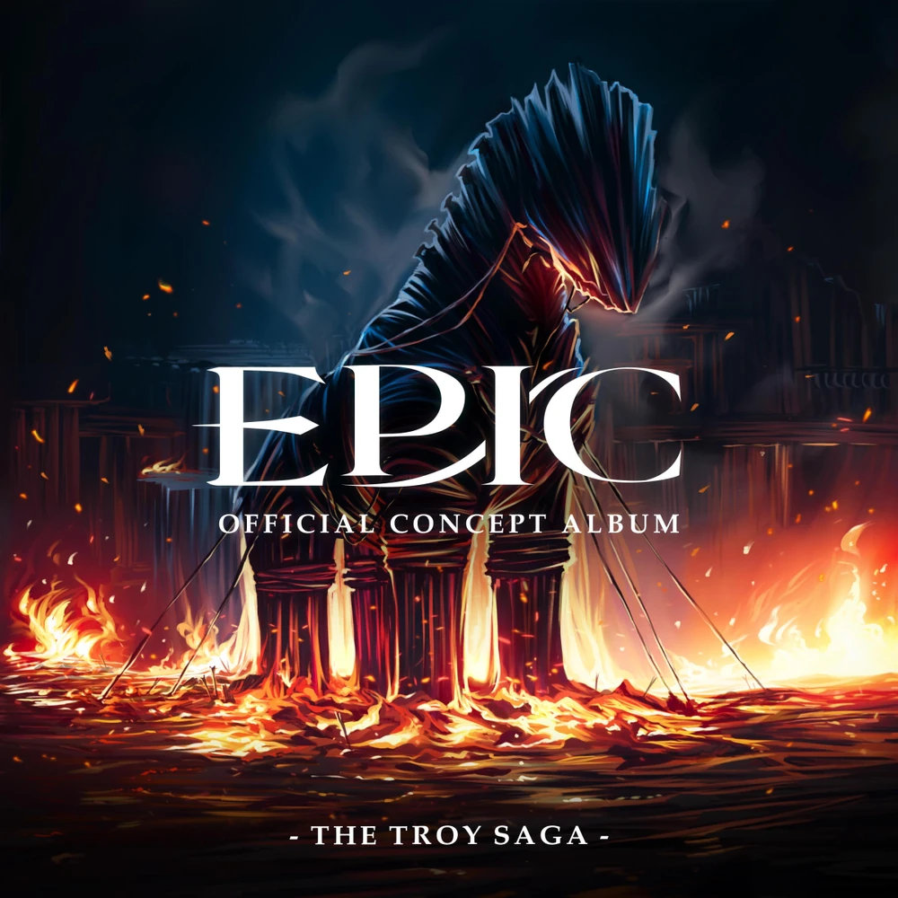
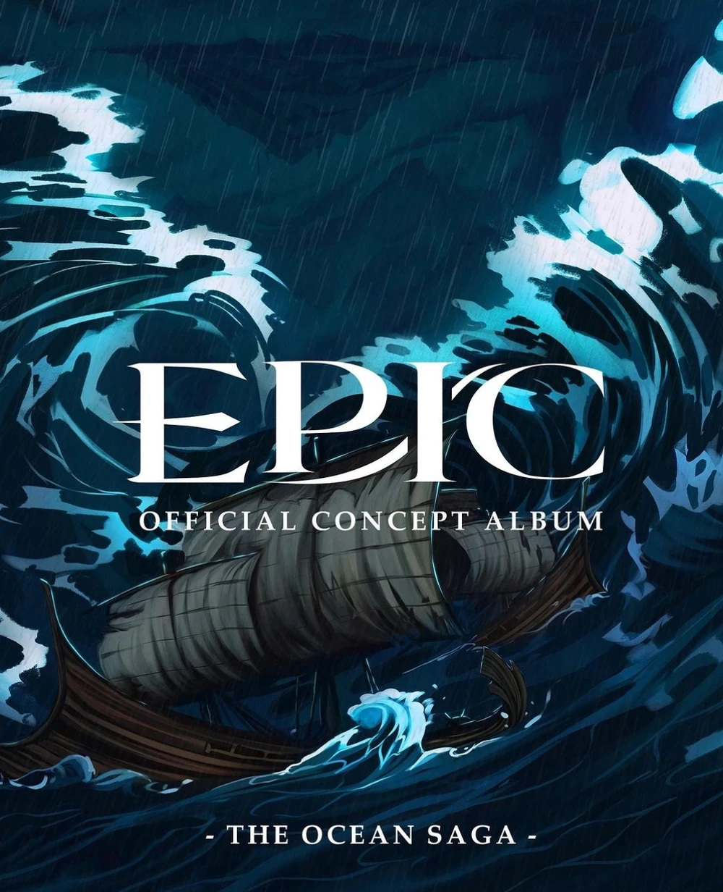
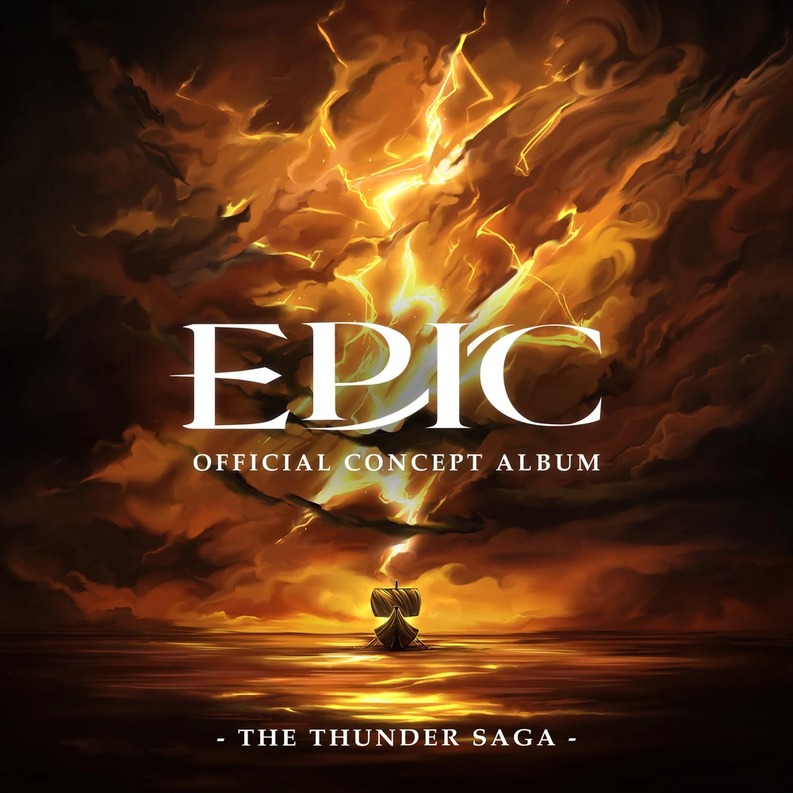

Sagas
La Saga de Troya
Tras diez años en la Guerra de Troya, Odiseo, rey de Ítaca, consigue finalmente tomar la ciudad con la estrategia del caballo de madera. Durante el saqueo, recibe una visión de Zeus que le advierte que, si no mata al hijo de Héctor, ese niño crecerá y buscará vengarse contra él y de su familia. Odiseo duda, recordando a su propio hijo Telémaco, pero con gran dolor termina cumpliendo la advertencia y lanza al bebé desde las murallas. Tras la victoria, parte con su flota rumbo a Ítaca. En el camino, Odiseo y su compañero Polites desembarcan en una isla para buscar alimento. y se topan con los lotófagos, que intentan engañarlos ofreciéndoles un fruto. Odiseo desconfía de ellos y se lamenta de su “infortunio al tener los brazos abiertos”. Polites, sin embargo, se comunica con los lotófagos, quienes los dirigen hacia una cueva al este. La diosa Atenea observa con preocupación cómo su discípulo comienza a apartarse de sus enseñanzas. Para conducirlo, se le aparece y le recuerda sus expectativas sobre el y su destino.
Canciones
La Saga de los Ciclopes

Odiseo y sus hombres llegan a la cueva indicada por los lotófagos y encuentran un rebaño de ovejas. Matan una para comer, pero el dueño, el cíclope Polifemo, aparece furioso y amenaza con devorarlos. Odiseo intenta calmarlo ofreciéndole vino griego y, cuando el cíclope le pregunta su nombre, responde que se llama “Nadie”. Polifemo bebe el vino pero ataca a los hombres, matando a varios, entre ellos Polites. Gracias a que el vino estaba mezclado con fruto de loto, el cíclope cae inconsciente. Odiseo anima a sus hombres a luchar en honor a los caídos y les ordena afilar el garrote de Polifemo para convertirlo en una lanza. Con ella lo hieren en el ojo, dejándolo ciego. Sus gritos llaman a otros cíclopes, pero al decir que “Nadie” lo había herido, estos lo ignoran. Odiseo y los sobrevivientes aprovechan para robar las ovejas y escapar. Sin embargo, Atenea aparece y le pide que mate a Polifemo. Él desobedece y, con arrogancia, revela su verdadero nombre. Esto enfurece a Atenea, y la discusión entre ambos pone fin a su amistad.
Canciones
La Saga del Oceano
La tripulación de Odiseo atraviesa una fuerte tormenta y llega a una isla flotante, donde Odiseo busca la ayuda de Eolo, dios del viento. Odiseo planea visitar la isla para pedir ayuda al dios del viento Eolo, pero Euríloco, su segundo al mando, le dice que el plan es arriesgado. Odiseo conversa con Euríloco a solas y le dice que siga las órdenes y no contradiga sus planes. Al llegar a la isla, Eolo le entrega a Odiseo una bolsa mágica de vientos para regresar a Ítaca, con la condición de no abrirla. Los rumores entre la tripulación hacen creer que la bolsa contiene un tesoro. Cuando ya estaban cerca de casa, la bolsa es abierta mientras Odiseo duerme, desatando los vientos. Aunque Odiseo y Euríloco logran contener parte de ellos, la flota es arrastrada hasta las tierras de los lestrigones. Allí aparece Poseidón, padre de Polifemo, quien, vengando a su hijo, hunde todos los barcos excepto el de Odiseo, dejándolo solo con cuarenta y tres hombres. Antes de que el dios del mar pueda acabar con la última nave, Odiseo libera lo que queda del viento de Eolo y logra escapar.
Canciones
La Saga de Circe

Al llegar a una isla, Odiseo toma la decisión de mandar a un grupo para explorar la isla, liderados por Euríloco, quien se niega ya que necesitaba confesarle algo a su capitán. Odiseo le pide que hablen luego del tema y Euríloco no insiste más. El equipo de exploracion se encuentran con la hechicera Circe, que los transforma a todos, excepto a Euríloco, en cerdos. Odiseo y Euríloco discuten si deben rescatar a los hombres o reducir sus pérdidas, y Odiseo finalmente comienza a dirigirse al palacio de Circe. El dios Hermes se le aparece a Odiseo y le da la hierba mágica moly, que le permite igualar el poder de Circe y evitar caer en sus hechizos. Odiseo llega al palacio y pregunta por sus compañeros, desatando una discusión con la hechicera, quien admite estar protegiendo a quienes viven allí. Odiseo consigue vencerla y Circe cambia de táctica, intentando seducirlo, pero él rechaza sus insinuaciones y le revela su anhelo de regresar con su esposa, Penélope. Circe acepta dejar ir a los hombres, otorgándoles acceso al inframundo, donde pueden buscar el consejo del profeta ciego Tiresias.
Canciones
La Saga del Inframundo

Guiados por las instrucciones de Circe , Odiseo y su tripulación viajan al Inframundo en busca de Tiresias. Mientras navegan por el Inframundo, son atormentados por los lamentos de los muertos. Odiseo tiene visiones de sus compañeros caídos, encuentra a Polites, y finalmente ve a su madre, Anticlea , quien falleció esperando su regreso a casa. Cuando Odiseo finalmente encuentra a Tiresias, quien afirma que a pesar de tener una visión clarividente del pasado y del futuro, no ve un futuro en el que Odiseo regrese a casa ileso. Gracias a la profecía, Odiseo comienza a cuestionar su propia moralidad debido a sus decisiones que pusieron a su tripulación en peligro varias veces. Piensa en Polifemo, quien mató a Polites para vengar a su oveja favorita; Circe, quien convirtió a sus hombres en cerdos para proteger a sus ninfas; Poseidón, quien mató a la mayoría de la tripulación de Odiseo para vengar a su hijo y proteger su imagen; y él mismo, quien mató a innumerables troyanos para proteger su reino. Después de reflexionar, Odiseo se da cuenta de que la única manera de que pueda regresar a casa es abrazar su crueldad.
Canciones
★★★★★
La Saga del Trueno
En el mar, Odiseo tiene una visión de Penélope, que le dice que solo podrá volver a casa si atraviesa la guarida de Escila. Ella lo invita a unirse para aliviar su dolor, pero Odiseo descubre que en realidad es una sirena. Gracias a que él y sus hombres se habían tapado los oídos con cera, resisten el canto y logran capturar a las sirenas. Aunque estas suplican clemencia, Odiseo, recordando su error, ordena matarlas. La tripulación entra en la guarida de Escila. Allí, Euríloco confiesa haber sido quien abrió la bolsa de Eolo, pero Odiseo lo ignora y le ordena encender seis antorchas para guiar el paso. Escila, atraída por la luz, devora a seis hombres. Esto enfurece a Euríloco, que inicia un motín, hiere a Odiseo y lo encarcela. El barco llega a la isla del dios Helios, donde, pese a las advertencias de Odiseo, Euríloco mata una de sus vacas sagradas. Helios envía a Zeus para juzgar a la tripulación, y este obliga a Odiseo a elegir entre su propia vida o las del resto de su tripulación. Odiseo sacrifica a su tripulación, y Zeus mata a todos excepto a él.
Canciones
La Saga de la Sabiduria

Siete años después, en Ítaca, Telémaco ya con veinte años sueña con convertirse en un héroe como su padre y proteger a su madre de los pretendientes. Se enfrenta a Antínoo, pero es derrotado hasta que Atenea interviene y lo ayuda. Al preguntarle por qué lo hizo, la diosa recuerda con pesar su relación con Odiseo. Sin comprenderlo, Telémaco la anima a reconciliarse con su viejo amigo. Intrigada, Atenea revisa los recuerdos de Odiseo y descubre que está prisionero en la isla de Ogigia, retenido por la diosa Calipso, quien intenta conquistarlo mientras él se consume en la desesperación. Atenea decide intervenir y en el Olimpo pide a Zeus su liberación. Zeus accede con la condición de que convenza a otros cinco olímpicos de apoyar la causa. Gracias a su sabiduría, Atenea logra convencerlos, pero al exigirle a Zeus que cumpla su palabra, furioso por sentirse burlado, la ataca con un rayo. Atenea sobrevive y hace una última súplica por la libertad de Odiseo.
Canciones
La Saga de la Venganza

Calipso se despide de Odiseo antes de que abandone Ogigia, expresando remordimiento por el dolor que le causó con su comportamiento obsesivo, pero declarando que no lamenta haberse enamorado. Hermes aparece una vez más, ofreciendo orientación y la bolsa de viento de Eolo para ayudar a Odiseo a regresar a casa en una balsa hecha a mano. Odiseo evade al monstruo marino Caribdis antes de ver las costas de Ítaca, donde se encuentra nuevamente con Poseidón, quien le da el ultimátum: ahogarse o ver toda Ítaca sumergida en un maremoto. Odiseo es arrastrado hasta el fondo del océano, pero abre la bolsa de viento una última vez para contraatacar. Poseidón le dice a Odiseo que al abrir la bolsa de viento, liberó su tormenta, lo que significa que destruyó su última oportunidad de regresar a casa. Odiseo comienza a torturar a Poseidón apuñalandolo repetidamente con su propio tridente, obligándolo a ceder y detener la tormenta.
Canciones
La Saga de Ithaca

En Ítaca, Penélope interpreta la tormenta como señal de un cambio y propone un reto: casarse con quien logre tensar el arco de Odiseo y disparar una flecha a través de doce hachas. Ninguno de los pretendientes lo consigue, y al quedar en evidencia, Antínoo trama asesinar a Telémaco y abusar de Penélope. Sin embargo, es abatido por una flecha disparada por Odiseo, recién regresado, que se revela y masacra sin piedad al resto de los pretendientes. Tras la batalla, padre e hijo se reencuentran después de veinte años y comienzan a forjar un vínculo. Cuando Telémaco parte para buscar a Penélope, Atenea se le aparece a Odiseo y le pregunta si podría vivir en un mundo más pacífico, pero Odiseo le dice que no llegará a ver un mundo así. Finalmente, Odiseo se reencuentra con Penélope, quien lo pone a prueba pidiéndole mover el lecho nupcial. Al explicar que es imposible porque está construido en torno a un olivo enraizado, Penélope lo reconoce como su verdadero esposo, y ambos reafirman su amor.